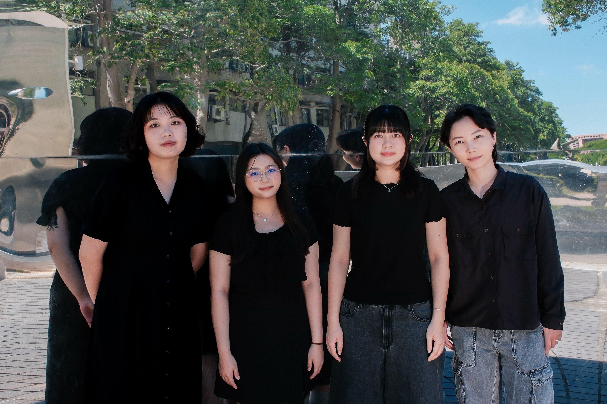
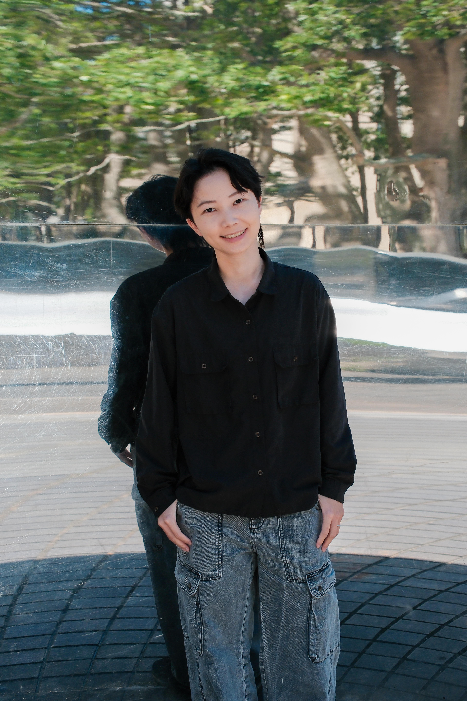
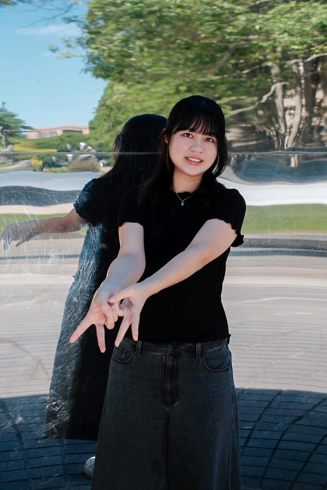

TEAM & MEMBERS


About us
哈囉你好嗎？衷心感謝～
我們是四位來自陽明交大傳播與科技學系的學生，因為喜歡美食而聚集在一起。我們深入走訪新竹適合獨享的餐廳、訪談單人用餐的食客，同時傾聽了店家老闆們背後的心酸血淚史。跟著嚮導碗粿出發，一起找到單人友善的餐廳！
 INSTAGRAM
INSTAGRAM
繪圖擔當 -
精美地圖與可愛倉鼠的產地🐹

攝影擔當 -
質感照片的產地📷

排版擔當 -
整合素材的美感產地📖

聯絡擔當 -
廠商與餐廳店家的橋樑🌉

Introduction
隨著社會結構轉變，一個人吃飯日趨普及，但在部分文化中仍易被貼上孤僻等負面標籤，讓人無法自在走入餐廳。
我們希望透過介紹一人食的文化內涵與起源、走訪新竹單人友善餐廳、訪談常獨自用餐的消費者與店家營運心路歷程，提供讀者新竹獨食美食地圖與文化剖析，讓大家知道：一個人吃飯，其實並不孤單！
指導教授：游婉雲
Visual Outcomes

我們的主要成果為一本以「一人食文化」為主題的雜誌。內容從一人食文化的發展背景出發，透過我們設計的四種倉鼠食客形象，帶領讀者探索不同的一人食風格。接著實際走訪新竹東區、北區、竹北地區的單人友善餐廳，分享真實的用餐體驗與評價。最後，透過深度專訪七間不同風格餐廳的老闆，深入了解他們的創業故事，為雜誌畫下充滿溫度的句點。
我們也設計了四款倉鼠食客的特色貼紙，以及能陪伴讀者度過獨自用餐時光的手機支架。所有創作内容將透過 IG 帳號進行宣傳，讓更多人認識一人食文化，傳遞一個人也能好好吃飯的理念。

How It Works

歡迎大家於12/2至12/4在交大人社二舘以及12/26至12/27在臺北樹心會館停下脚步，翻閲我們的心血！
這是一張和因爲不喜歡露臉而戴著星際大戰頭盔的老闆，在蘇寓拍下的合照。